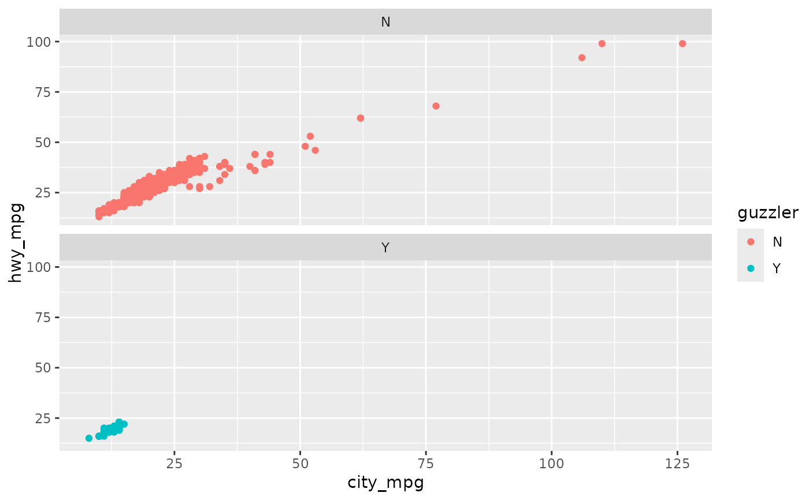

Details from the EPA.
epa2012
A data frame with 1129 observations on the following 28 variables.
a numeric vector
Manufacturer name.
Vehicle division.
Vehicle line.
Manufacturer code.
Model type index.
Engine displacement.
Number of cylinders.
Transmission speed.
City mileage.
Highway mileage.
Combined mileage.
Whether the car is considered a "guzzler" or not, a factor with levels N and Y.
Air aspiration method.
Air aspiration method description.
Transmission type.
Transmission type description.
Number of gears.
Whether transmission locks up, a factor with levels N and Y.
A factor with level N only.
Drive system, a factor with levels.
Drive system description.
Fuel usage, a factor with levels.
Fuel usage description.
Class of car.
Car or truck, a factor with levels car, 1, 2.
Date of vehicle release.
Whether the car has a fuel cell or not, a factor with levels N, Y.
Fueleconomy.gov, Shared MPG Estimates: Toyota Prius 2012.
library(ggplot2) library(dplyr) # Variable descriptions distinct(epa2012, air_aspir_method_desc, air_aspir_method)#> # A tibble: 4 x 2 #> air_aspir_method air_aspir_method_desc #> <fct> <fct> #> 1 NA Naturally Aspirated #> 2 TC Turbocharged #> 3 SC Supercharged #> 4 NA NA#> # A tibble: 7 x 2 #> transmission transmission_desc #> <fct> <fct> #> 1 M Manual #> 2 AM Automated Manual #> 3 SA Semi-Automatic #> 4 A Automatic #> 5 SCV Selectable Continuously Variable (e.g. CVT with paddles) #> 6 CVT Continuously Variable #> 7 OT Other#> # A tibble: 5 x 2 #> drive_sys drive_desc #> <fct> <fct> #> 1 R 2-Wheel Drive, Rear #> 2 A All Wheel Drive #> 3 F 2-Wheel Drive, Front #> 4 4 4-Wheel Drive #> 5 P Part-time 4-Wheel Drive#> # A tibble: 7 x 2 #> fuel_usage fuel_usage_desc #> <fct> <fct> #> 1 GP Gasoline (Premium Unleaded Recommended) #> 2 GPR Gasoline (Premium Unleaded Required) #> 3 G Gasoline (Regular Unleaded Recommended) #> 4 EL Electricity #> 5 DU Diesel #> 6 GM Gasoline (Mid Grade Unleaded Recommended) #> 7 H Hydrogen# Guzzlers and their mileages ggplot(epa2012, aes(x = city_mpg, y = hwy_mpg, color = guzzler)) + geom_point() + facet_wrap(~guzzler, ncol = 1)